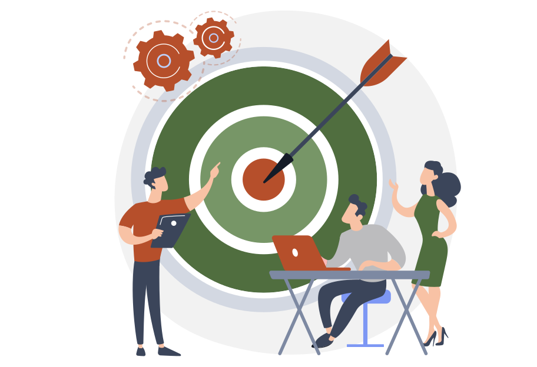
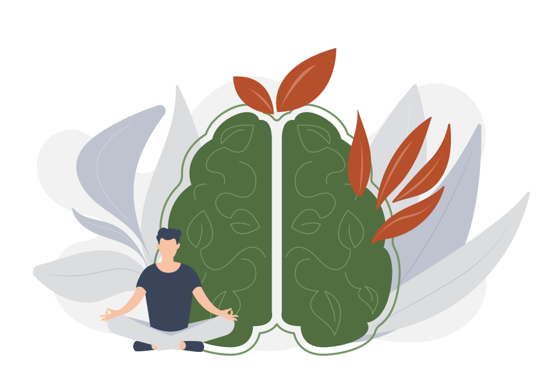
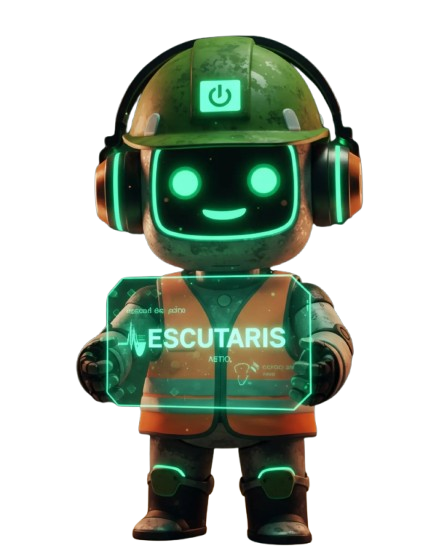
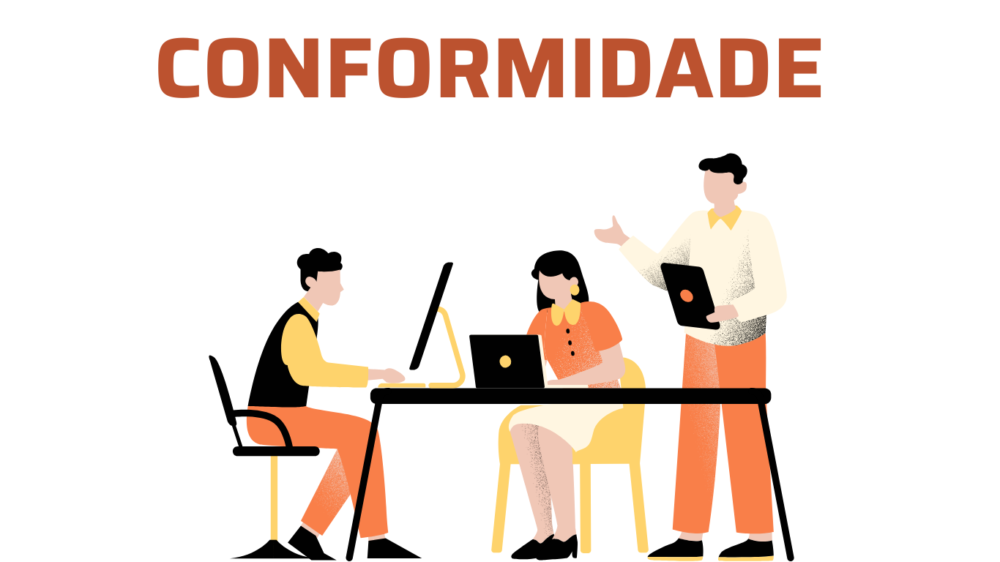
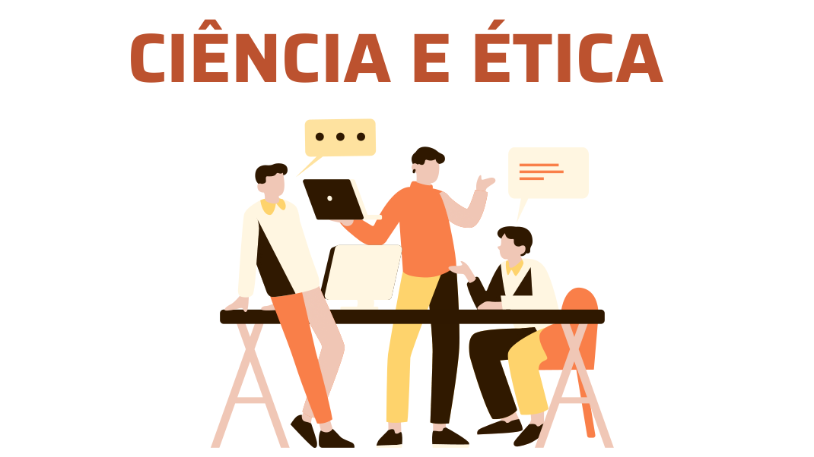
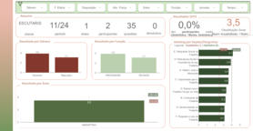
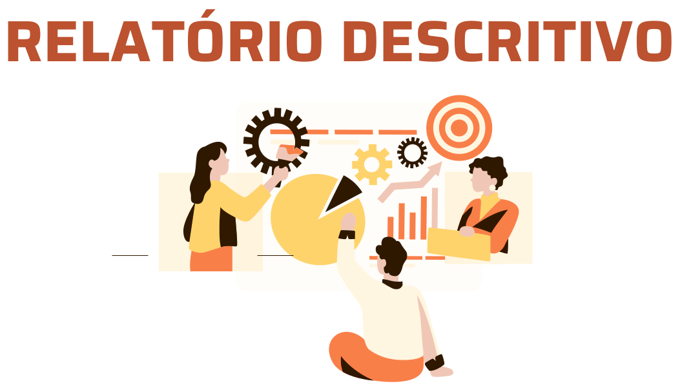
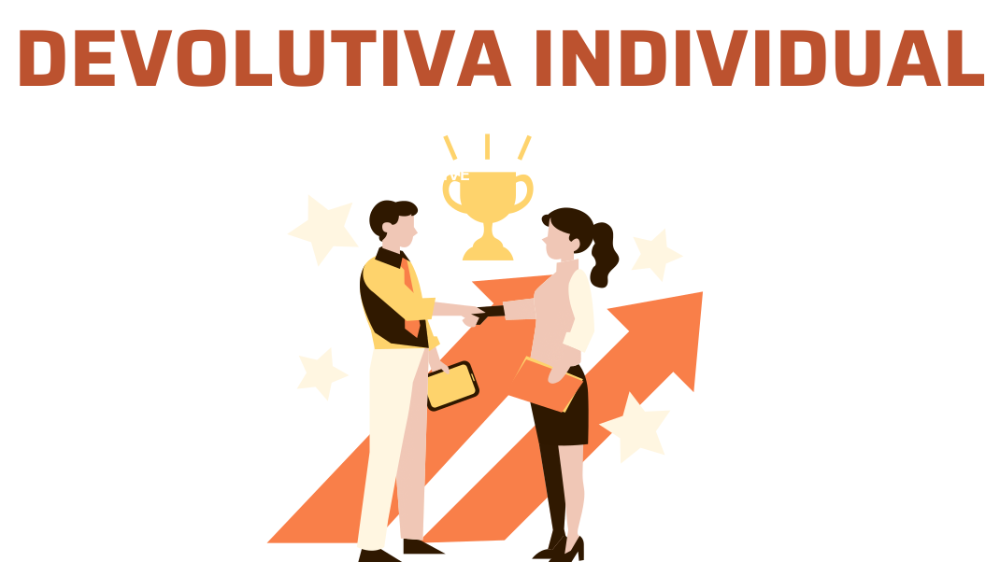
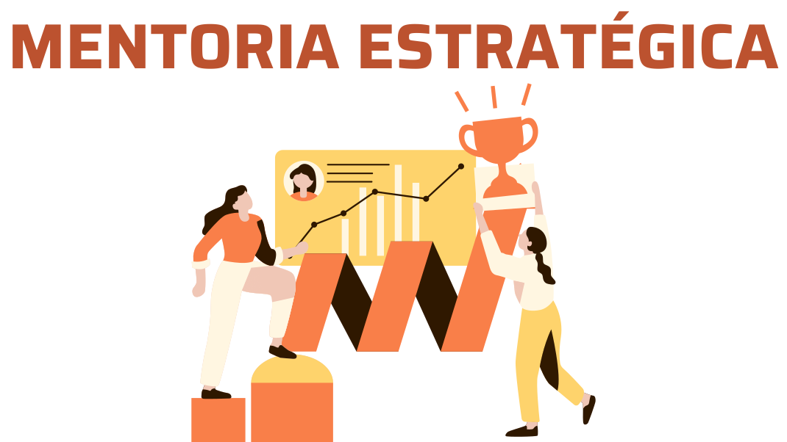

@escutarissaudemental
Diagnóstico dos Fatores Psicossociais, Saúde Mental e Clima Organizacional
Transformando ambientes de trabalho através de soluções personalizadas em saúde mental no trabalho
Entrega em tempo recorde
Painel de dashboard interativo em, até, 72horas após finalização da pesquisa.
Dados analíticos com filtros diversos incluindo geracionais
Permitindo a empresa aprofundar a compreensão da sua realidade.
Clareza
Reconhecimento dos principais pontos cegos da empresa com qualidade técnica, segurança e simplicidade.
Cuidando do ambiente de trabalho
Excelência em diagnósticos psicossociais e saúde mental corporativa
A Escutaris foi criada com a missão de transformar ambientes de trabalho por meio de diagnósticos especializados em saúde mental e fatores psicossociais
Atualmente, a Escutaris conta com uma equipe multidisciplinar composta por 3 médicos do trabalho, 2 engenheiros de segurança, 1 ergonomista e 2 psicólogas do trabalho, o que fortalece a credibilidade da solução e garante uma abordagem técnica e humanizada, alinhada às exigências legais e às boas práticas de gestão da saúde ocupacional.
+12 Anos
de transformações
Cuidando do ambiente de trabalho
Missão, visão e valores que transformam ambientes corporativos com ética, inovação e empatia.
Nossos valores
Compromisso com inovação, confiança, empatia e colaboração para transformar ambientes de trabalho.
- Inovação com propósito: desenvolvemos soluções práticas aliadas ao rigor científico.
- Transparência e confiança: mantemos processos seguros e confidenciais para empresa e trabalhadores.
- Empatia e personalização: adaptamos nossos serviços à realidade de cada organização.
- Colaboração e crescimento: trabalhamos com as lideranças e trabalhadores para promover ambientes de trabalho resilientes e acolhedores.
Nossa missão
Democratizar o acesso qualificado a diagnósticos de saúde mental no trabalho e fatores psicossociais, promovendo ambientes de trabalho mais seguros e saudáveis e em conformidade com a legislação.
- Garantir diagnósticos acessíveis e qualificados em saúde mental e fatores psicossociais no ambiente de trabalho.
- Promover espaços de trabalho seguros, saudáveis e alinhados às exigências legais.

Nossa visão
Ser referência em diagnósticos de saúde mental corporativa para pequenas e médias empresas, consolidando-se como um dos principais nomes em saúde ocupacional no Nordeste até 2030.
- Tornar-se referência em diagnósticos de saúde mental corporativa para pequenas e médias empresas.
- Consolidar liderança em saúde ocupacional no Nordeste até 2030.


Simplifique o Diagnóstico Psicossocial no PGR com Inteligência Artificial
Seu assistente especializado para interpretar a NR-1 e realizar diagnósticos psicossociais precisos em minutos, não em semanas.
Serviços
A Escutaris contribui para a transformação dos ambientes de trabalho por meio de serviços especializados em diagnóstico e apoio psicossocial. Veja como nossas soluções podem apoiar sua empresa:
Diagnóstico dos fatores psicossociais e saúde mental no trabalho
Identifique os principais fatores de risco psicossociais em sua organização com um diagnóstico completo, 100% seguro e anonimizado, em conformidade com a NR-1.
Saiba maisEscuta e direcionamento dos trabalhadores com sinais de sofrimento mental
Ofereça apoio personalizado para trabalhadores com sinais de sofrimento mental por meio de entrevistas e grupos focais.
Saiba maisMentoria para líderes e profissionais de SST sobre saúde Mental no Trabalho
Fortaleça a liderança em saúde mental com mentoria especializada para gestores e profissionais de SST.
Saiba maisPosts mais recentes
Nosso blog é o espaço dedicado a compartilhar informações essenciais sobre segurança e saúde no trabalho, promovendo um ambiente mais seguro, saudável e consciente para todos os colaboradores.
Nossos diferenciais
Compreendemos que cada empresa possui desafios únicos e específicos em saúde mental e fatores psicossociais. Por isso, desenvolvemos uma metodologia adaptável que se destaca pelo rigor científico, pela personalização e pelo compromisso com a ética e a confidencialidade. Conheça nossos diferenciais:
Conformidade e segurança jurídica
Nossos diagnósticos e consultoria são realizados em conformidade com as regulamentações vigentes, como a NR-1 e a Lei 14.831/2024. Garantimos que sua empresa esteja plenamente alinhada com os critérios legais, proporcionando segurança jurídica e fortalecendo a confiança da organização como promotora de saúde mental no ambiente de trabalho.

Abordagem baseada em ciência e ética
Todos os questionários e métodos diagnósticos são cientificamente validados e adaptados para refletir as melhores práticas de psicologia do trabalho e saúde ocupacional. Nossa metodologia não apenas identifica fatores de risco, mas também orienta ações práticas e efetivas, com total respeito à confidencialidade dos trabalhadores e aos padrões éticos de saúde e segurança.

Dashboard interativo e monitoramento em tempo real
Uma plataforma visual que permite aos gestores monitorar e analisar os principais fatores de risco por setores, funções, geração e jornadas de trabalho. Essa ferramenta fornece uma visão clara e prática das condições psicossociais da empresa, facilitando a identificação de padrões e a tomada de decisões informadas.
Entenda seu resultado QTV: Saúde, Bem-Estar e Cultura
Organizacional(WALTON)
QTV: Saúde, Bem-Estar e Cultura
Organizacional(WALTON)
Meu Dashboard

Relatório descritivo e recomendações práticas
Nosso relatório vai além da mera apresentação de dados. Com uma análise profunda e recomendações personalizadas, orientamos a empresa em cada etapa do plano de ação. Este relatório serve como um guia estratégico, permitindo que o empresário priorize áreas críticas e estabeleça medidas que gerem o impacto máximo positivo na saúde mental e na produtividade dos trabalhadores.

Devolutiva individual e confidencialidade
Para as empresas que optam pela devolutiva individual, oferecemos feedbacks realizados por profissionais de saúde mental. Este diferencial reforça a confiança dos trabalhadores e incentiva o autocuidado, demonstrando o compromisso da empresa com o bem-estar de cada trabalhador.

Mentoria estratégica e suporte contínuo para líderes
Sabemos que o papel dos líderes é fundamental na promoção de um ambiente de trabalho saudável. Por isso, a Escutaris oferece um programa de mentoria estratégica para apoiar gestores na interpretação de dados e na aplicação de ações corretivas. Através do suporte contínuo, nossos especialistas trabalham lado a lado com os líderes, garantindo a adaptação das estratégias de saúde mental aos objetivos organizacionais e promovendo uma cultura de bem-estar.

Como funciona o diagnóstico
Do primeiro contato à entrega do plano de ação — um processo simples, técnico e com resultado em mãos em dias.
Primeiro contato
Converse com nossa equipe para entender se o diagnóstico é o caminho certo para a sua empresa. Sem compromisso.
Falar com a equipeAlinhamento técnico
Definimos juntos as ferramentas mais adequadas ao perfil da empresa, setor e número de colaboradores.
Ver questionários disponíveisAplicação anônima e segura
Os questionários são enviados automaticamente aos colaboradores com total anonimato. Nossa equipe orienta a comunicação interna para garantir engajamento.
Dashboard em até 72h
Encerrada a coleta, o painel interativo com os resultados fica disponível em até 72 horas úteis — com filtros por setor, cargo, geração e unidade.
Devolutiva e plano de ação
Nossa equipe apresenta os achados, orienta a interpretação dos dados e apoia a integração ao PGR — com recomendações práticas para gestores e SST.
Seja Escutaris!
Transforme a saúde mental da sua empresa com diagnósticos
personalizados e eficazes.
Preencha os dados de sua
empresa aqui
Depoimentos
Depoimentos de empresas que transformaram seus ambientes de trabalho com a Escutaris.
Anos no mercado
Referência no Nordeste até 2030
Horas úteis para entrega de dashboards
Pacotes disponíveis
Perguntas Frequentes
Tire suas dúvidas sobre o diagnóstico psicossocial e como a Escutaris pode ajudar sua empresa.
O diagnóstico psicossocial identifica os fatores de risco relacionados ao trabalho que afetam a saúde mental dos colaboradores — como sobrecarga, assédio, falta de autonomia, conflitos e instabilidade. Com a atualização da NR-1 (2024), toda empresa é obrigada a incluir esses riscos no PGR. A Escutaris entrega esse diagnóstico de forma científica, com questionários validados e dashboard analítico.
Sim, o anonimato é garantido por design. Nenhuma resposta individual é rastreável — os dados são analisados em grupos e nunca de forma individual. Isso aumenta o engajamento e a honestidade das respostas. A empresa recebe apenas análises coletivas, com filtros por setor, cargo e geração, nunca por pessoa.
Sim. A metodologia da Escutaris foi desenvolvida para atender às exigências da NR-1 atualizada (2024) e está alinhada à ISO 45003 (norma internacional de saúde psicológica no trabalho) e à Portaria GM/MS. O relatório técnico pode ser integrado diretamente ao PGR, incluindo identificação dos perigos, avaliação e classificação dos riscos psicossociais e recomendações de medidas de controle — os elementos que a norma exige.
O dashboard interativo fica disponível em até 72 horas úteis após o encerramento da coleta. O relatório técnico completo é entregue em seguida, acompanhado de uma reunião de devolutiva com nossa equipe para apresentação dos achados e orientação do plano de ação.
O ideal é que todos os colaboradores participem — quanto maior a adesão, mais confiável e representativo é o diagnóstico. A pesquisa pode ser aplicada por setor, unidade ou em toda a empresa. Para grupos menores que 5 pessoas, os dados são agrupados para preservar o anonimato. Trabalhadores temporários, terceirizados e estagiários também podem ser incluídos.
O relatório da Escutaris já é estruturado no formato exigido pelo GRO/PGR: identificação dos perigos, avaliação dos riscos, classificação por nível de risco e recomendações de medidas de controle. Na reunião de devolutiva, nossa equipe orienta o responsável técnico (médico do trabalho, engenheiro de segurança ou SESMT) sobre como registrar os achados no PGR e priorizar as ações.
Sim. Todos os dados coletados são tratados em conformidade com a LGPD (Lei Geral de Proteção de Dados). As respostas dos colaboradores nunca são individualizadas — são processadas de forma agregada e anonimizada. A empresa contratante recebe apenas análises coletivas, sem acesso a dados pessoais identificáveis. Os dados são armazenados em ambiente seguro com controle de acesso e criptografia.
Suporte emocional e EAP atendem quem já está sofrendo — são fundamentais, mas atuam depois que o problema apareceu. O diagnóstico psicossocial age antes: identifica na fonte os fatores organizacionais que geram sofrimento (sobrecarga, falta de autonomia, estilo de liderança, conflitos estruturais) e permite intervir antes dos afastamentos. Além disso, é o diagnóstico — não o EAP — que atende à exigência da NR-1 de incluir riscos psicossociais no PGR.
Alguns sinais indicam que vale buscar assessoria técnica especializada: adoecimento recorrente ou aumento de afastamentos por saúde mental; conflitos sensíveis ou clima organizacional deteriorado; dúvidas sobre como atender às exigências da NR-1 no PGR; dificuldade em transformar percepções em dados confiáveis para a tomada de decisão. Se sua equipe interna de SST ou RH enfrenta qualquer desses cenários, o diagnóstico externo traz a imparcialidade e o rigor técnico necessários.
Contato
Entre em contato e dê o primeiro passo para um ambiente de trabalho mais saudável e produtivo.
Informações de contato
Encontre nossos canais para atendimento e entre em contato de forma rápida e fácil.
Escutaris - Diagnóstico dos Fatores Psicossociais
@escutaris_sst
Youtube
Escutaris - Saúde Mental no Trabalho
(71) 98135-7004
contato@escutaris.com.br
Fale conosco
Estamos prontos para ouvir e ajudar a transformar sua empresa.
Inscreva-se na nossa Newsletter
Receba insights exclusivos, dicas práticas e novidades sobre saúde mental no trabalho diretamente no seu e-mail. Transforme seu ambiente corporativo com a Escutaris!